New · PiMagic Studio 3.2
Workflow automation for PixInsight + an auto-loader for Photoshop
Astrophotography.
Made simple.
Select a folder. Press Start. PiMagic Studio runs the whole PixInsight workflow for you — calibration, stacking, colour, mosaics, plate solving and annotation — then hands your layers to Photoshop. Your time goes where it matters: the creativity.
- 3.2 the next step in PiMagic's evolution
- Hundreds of licences in use
- 1 year+ of PiMagic 2 behind it
- 2.6 still supported
Time-lapse: Craig Stocks · Utah Desert Remote Observatories
// how it works
Two clicks. Then it's all yours.
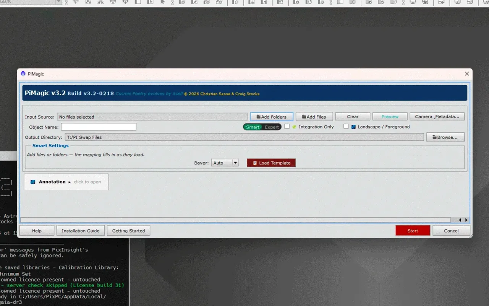
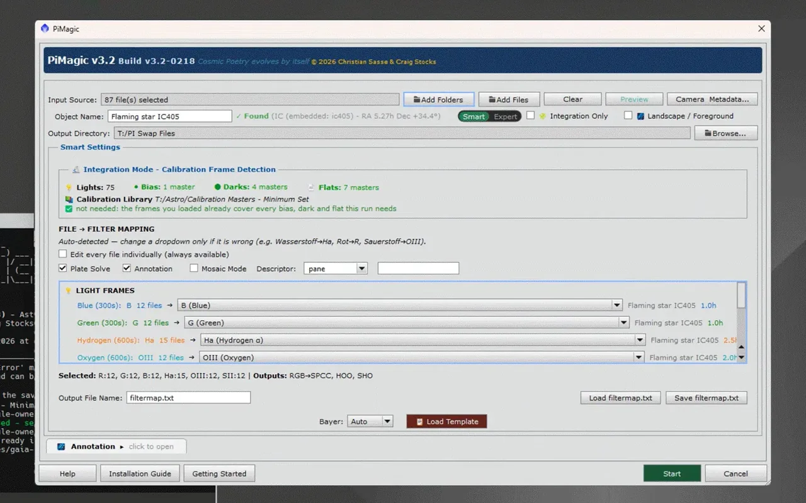
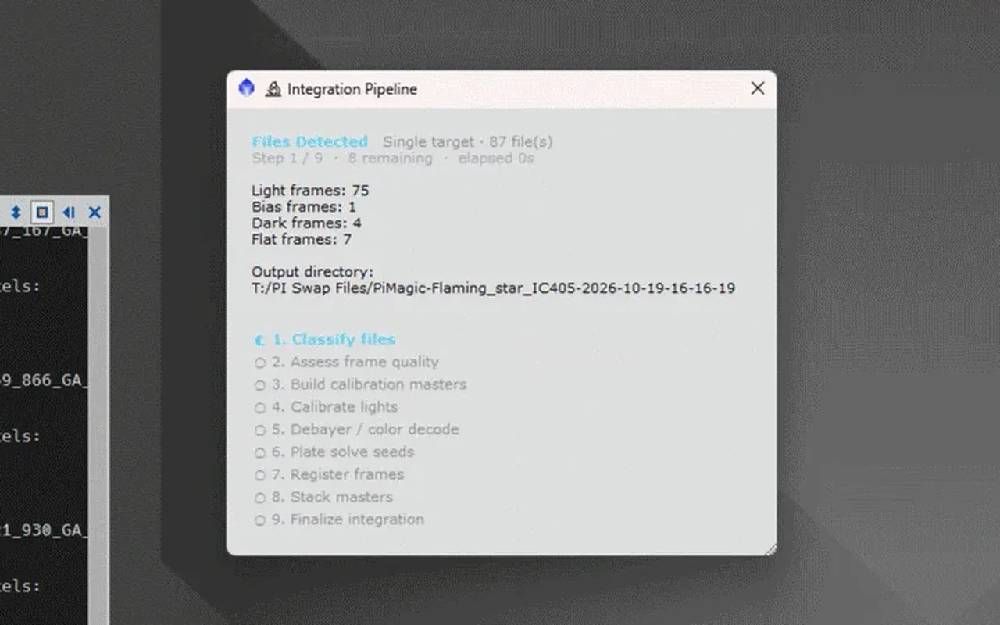
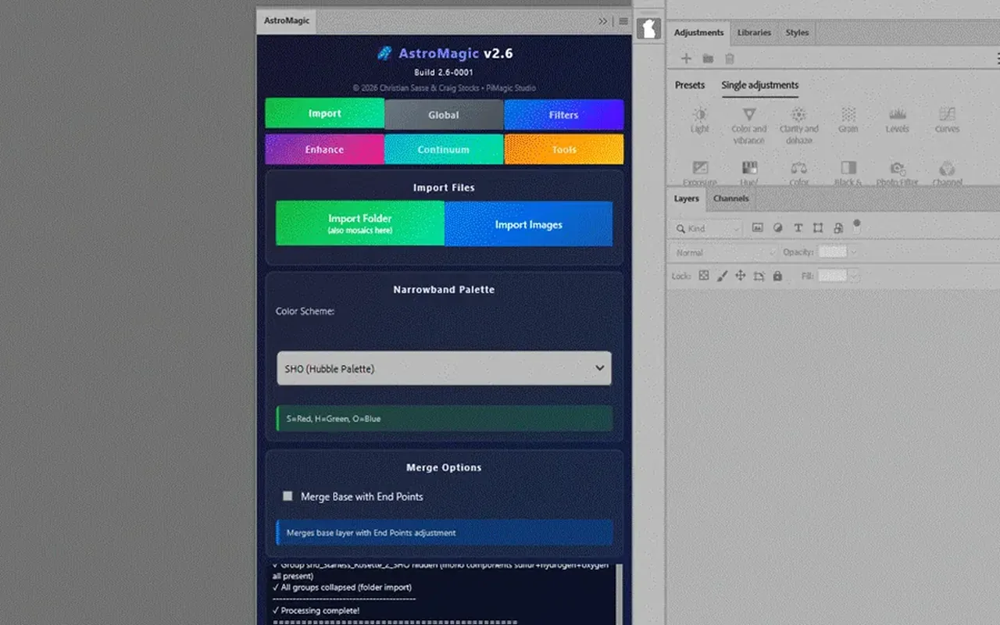
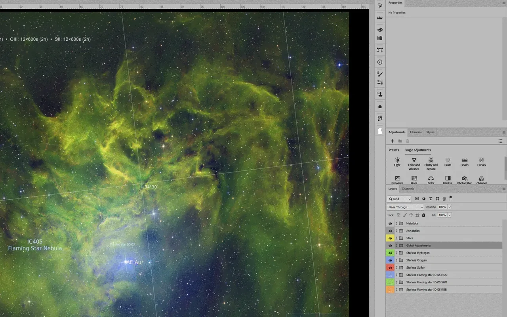
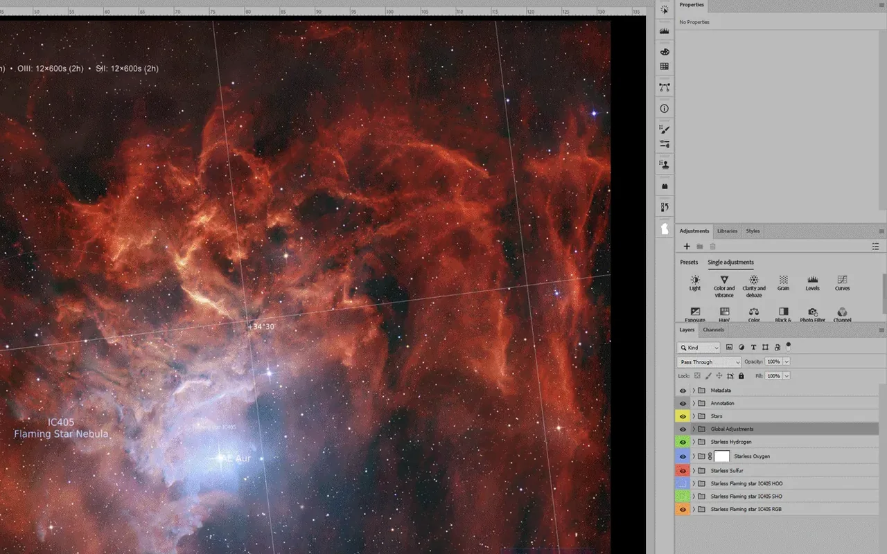
 The film · 0:30
The film · 0:30
Beside it: a real run, recorded by Craig Stocks on his own IC 405 data — no staging, no hand edits. The film shows a whole run in 30 seconds.
- Simple. Select a folder; that's the input.
- Automatic. Every routine step, done for you.
- Creative. Finish in Photoshop or any tool you love.
- Files87 · lights 75 · bias 1 · darks 4 · flats 7
- CameraZWO ASI6200MM Pro · mono
- FiltersR 12 · G 12 · B 12 · Hα 15 · OIII 12 · SII 12
- Calibrationmasters matched from your library
- TargetIC 405 Flaming Star · found
- Routedeep sky · narrowband + RGB
- OutputsRGB · HOO · SHO · annotation · layers
Processing path decided — ready for Start
// Smart mode
It configures itself.
Other tools hand you dozens of options. PiMagic reads your data first — camera, filters, frames, target — and decides the best processing path by itself. Deep sky or nightscape, mosaic or single field, narrowband or broadband: you don't set it up, it sets itself up.
- Picks the route from your data: deep sky, nightscape, mosaic, narrowband or broadband
- Matches calibration frames — from the folder or your library, same camera, nearest in time
- Builds the right colour images: RGB, LRGB, SHO, HOO, dual-band
- Every setting open: calibration, stacking, gradients, colour, stretching, stars
- Edit the filter mapping, choose palettes, blends and mosaic projection
- "Reset to Recommended" brings back Smart's choices at any time
// mosaics, fully automatic
Six raw panes.
One seamless mosaic.
- Found
- Placed
- Matched
- Blended
Six linear panes of Rho Ophiuchi, each with its own brightness, become one mosaic. Same two clicks — PiMagic finds, places, matches and blends every pane.


// not a one-trick pony
One workflow. Every kind of night.
From a fisheye lens to a deep-sky telescope, mono or colour camera — the same two clicks.


// PiSolver · included
It knows where you pointed.
And names what it sees.
- Our own blind solver: no target, telescope or camera details needed — it finds the field in seconds
- Linear or stretched, any format: FITS, XISF, camera RAW, TIFF, PNG, JPEG
- Every run delivers the annotation as its own layer: object names, coordinate grid and the image's metadata
// one image, start to finish
From Start to your finish.
A real PiMagic run on Craig Stocks' Elephant Trunk data, sped up — then into Photoshop. It plays by itself; click any step, or take the sliders yourself.
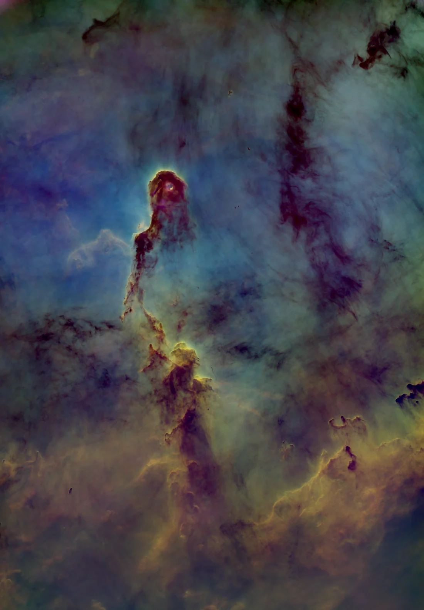
Nebula · starless
Stars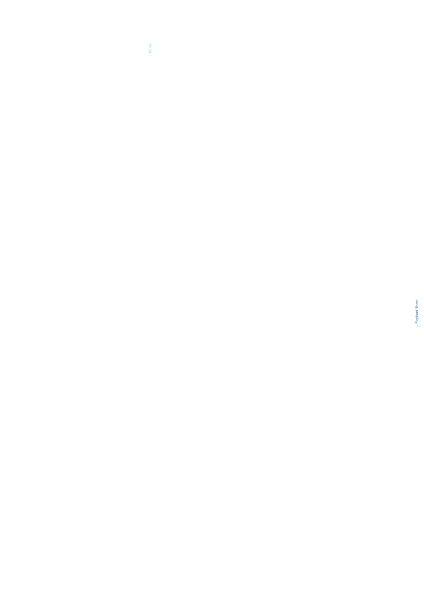
AnnotationProperties · Global adjustments
Your turn — drag a slider
Layers
- Metadata
- Annotation
- Stars
- Nebula · starless
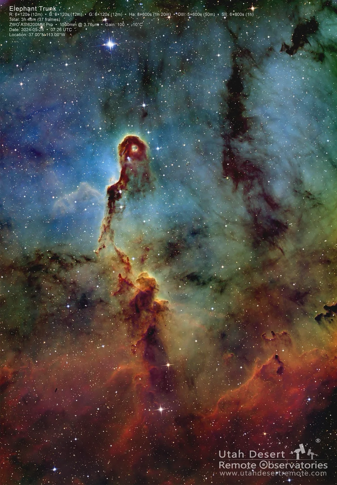
// your finish
Finished by Craig Stocks.
Same data, same layers — a few minutes of sliders in Photoshop. The routine took no effort; the time went into the art.
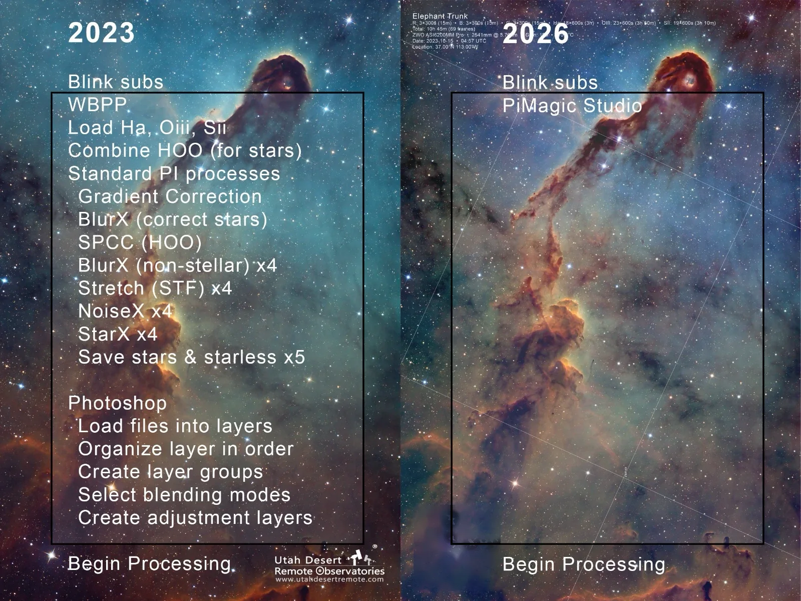
// 2023 vs 2026
Same fifteen minutes.
All of it on the fun part.
In 2023 Craig worked through about fifteen manual steps before the creative work could even begin. In 2026: blink the subs, run PiMagic Studio, begin processing.
“In mere minutes, I produced stunning results that would have otherwise demanded years of trial and error.”
Julian Segal
“Probably one of the greatest contributions to processing since RC-Astro's AI tools!!”
Josep Drudis
“For me, this has truly brought back the fun of astro imaging and processing.”
Paul Brandenburg
// get PiMagic Studio
More nights imaging.
More time creating.
- PiMagic 3.2 — select a folder, press Start · Smart and Expert mode
- PiSolver — our blind solver and annotator, built in
- AstroMagic — the auto-loader for Photoshop: your results as organised layers
- Mac, Windows, Linux · requires PixInsight 1.9.5
PiMagic Studio 3 · version 3.2
$119
PiMagic + PiSolver + AstroMagic for Photoshop
Buy PiMagic StudioInstant download · licence key by email